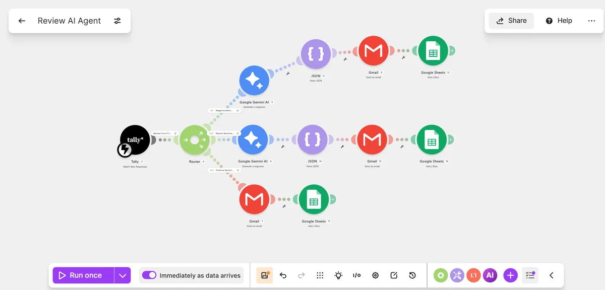
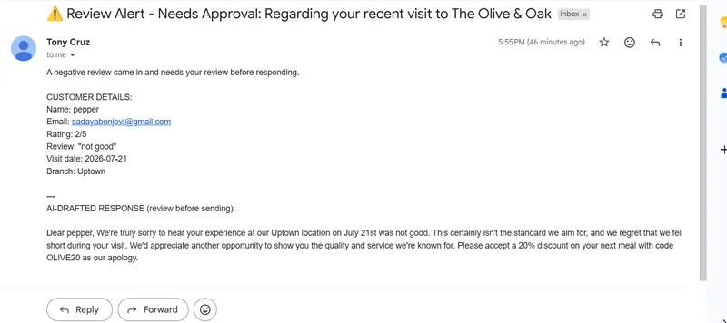
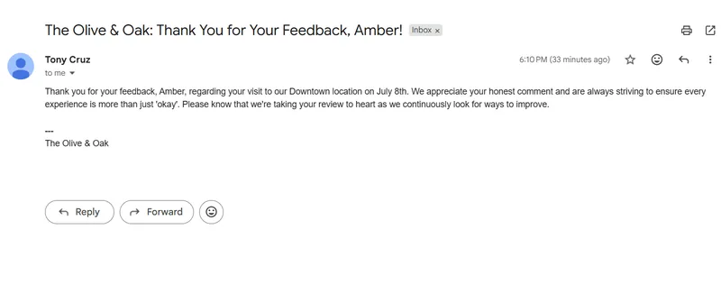
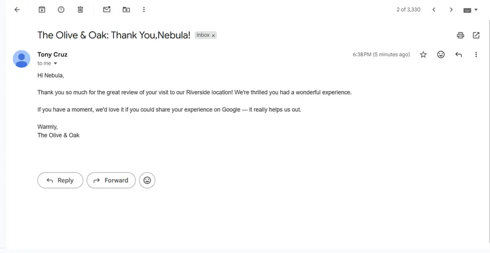
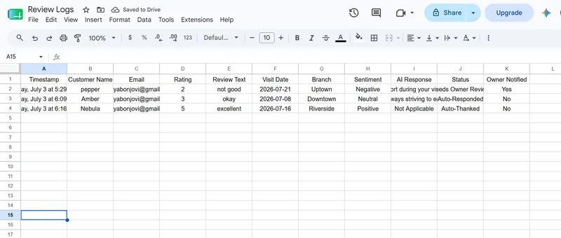

Project
A fully deployed review response agent built for a fictional restaurant, "The Olive & Oak." It takes a Tally review submission, routes it by star rating into three distinct paths, uses AI only where actual reasoning is needed, logs every review to Google Sheets, and sends the right email to the right person automatically. Built with Make.com, Tally, Google Gemini AI, Google Sheets, and Gmail.
A complete review-response agent built on Make.com for a fictional restaurant, "The Olive & Oak." Instead of a single generic auto-reply for every review, this agent treats a 2-star complaint, a 3-star mixed review, and a 5-star rave completely differently — because they need different handling.
A Router splits every submission into three branches by rating. Negative reviews get a Google Gemini AI-drafted, context-aware apology with a discount code — but that draft goes to the restaurant owner for approval first, never straight to the customer. Neutral reviews get a lighter AI-drafted acknowledgment sent directly to the customer. Positive reviews skip AI entirely and get a simple templated thank-you, since there's nothing to reason about.
AI only where it's actually needed. Deterministic logic everywhere else.
This is the actual Make.com scenario running live. Every module visible here is active and deployed.

// live scenario — Tally trigger → filter → router → negative/neutral/positive branches → Gemini + Parse JSON where needed → Gmail → Sheets




| # | Step | Tool | Status |
|---|---|---|---|
| 1 | Customer submits a review through the Tally form — name, email, star rating, review text, visit date, branch | Tally | ✓ Live |
| 2 | Filter blocks any submission missing an email or review text, or with a rating outside 1–5 | Make.com — Filter | ✓ Live |
| 3 | Router splits the flow into three branches purely on the numeric rating value | Make.com Router | ✓ Live |
| 4a | Rating ≤ 2: Gemini drafts a specific apology referencing the actual complaint, plus a discount code | Google Gemini AI | ✓ Live |
| 5a | Raw Gemini output parsed into clean subject / body fields |
Make.com — Parse JSON | ✓ Live |
| 6a | Draft emailed to the restaurant owner for approval — never sent straight to the customer | Gmail — Send an Email | ✓ Live |
| 7a | Logged to Google Sheets with Status = Needs Owner Review, Owner Notified = Yes | Google Sheets — Add a Row | ✓ Live |
| 4b | Rating = 3: Gemini drafts a lighter, warm acknowledgment — no apology, no discount | Google Gemini AI | ✓ Live |
| 5b–6b | Parsed and sent directly to the customer, since a neutral review carries lower risk than a negative one | Parse JSON → Gmail | ✓ Live |
| 7b | Logged with Status = Auto-Responded, Owner Notified = No | Google Sheets — Add a Row | ✓ Live |
| 4c–5c | Rating ≥ 4: simple templated thank-you sent directly to the customer — no AI call, nothing to reason about | Gmail → Google Sheets | ✓ Live |
The routing logic and prompts worked on the first pass. What didn't work — for a while — was getting Gemini's response to actually reach the email. The AI-DRAFTED RESPONSE section of every owner alert kept arriving completely blank, even though every upstream step reported success.
Gmail sent successfully, the customer details section was fully populated, but the "AI-DRAFTED RESPONSE" section at the bottom was blank every time — despite the Gemini module reporting a completed run.
Gemini's raw output was wrapped in a ```json ... ``` code fence, which looked like the obvious culprit for a broken JSON parse. The system prompt was updated to explicitly forbid markdown fencing and re-tested — the field was still empty.
Inspecting the Parse JSON module's own execution output showed the real issue: the JSON string input was mapped to Candidates[].Content — an object containing a parts array and a role, not plain text. The parser was trying to read subject/body out of a wrapper object that didn't contain them at the top level.
The next attempt mapped the field one level deeper, into Candidates[].Content.Parts[].Text — the actual string. This would have worked, but it turned out the Gemini module already exposed a simpler, flattened field.
The Gemini module output included a top-level Result field — the same JSON string, already unwrapped from the Candidates/Content/Parts structure. Pointing Parse JSON at Result instead of the nested path fixed it immediately: subject and body populated correctly in the owner alert, the customer emails, and the Sheets log on every subsequent test.